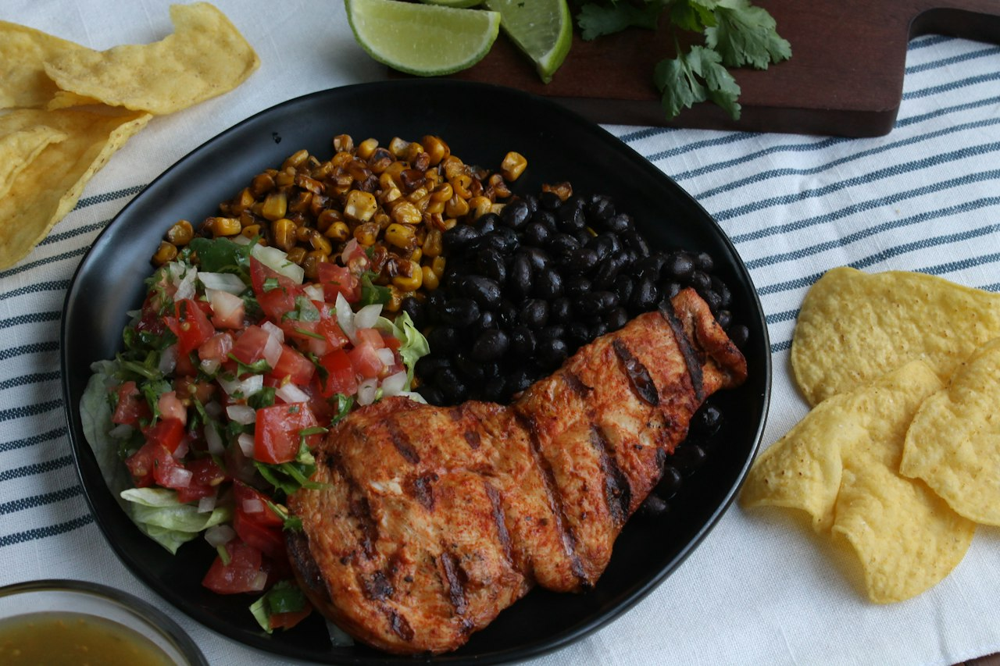

Mexican Chicken Salad Bowl
Big-batch chipotle chicken, black beans, and veg tossed in a skyr chipotle sauce built on the pan fond. Roughly 1 calorie per gram, so portions are easy to back-math.
Mexican · High Protein · High Fiber · Meal Prep · Quick

Per serving
423kcal
45gprotein
Makes 3 servings. Whole batch: 1270 kcal, 134g protein.
Ingredients
- Sauce
Steps
- Sear the chicken in a hot pan until it picks up some color, then move it to a large bowl.
- Cook the frozen vegetables in the same pan until heated through and any water has cooked off. Add to the bowl.
- Deglaze the pan with a splash of bone broth, scraping up the fond, and reduce to a couple of tablespoons.
- Whisk the reduced fond with skyr, chipotle mayo, and hot sauce.
- Toss chicken, vegetables, black beans, and red onion with the sauce. Season and chill, or eat warm.
Cook's notes
Full batch is about 1,270 calories, 134g protein, and 30g fiber — about 1 calorie and 0.1g protein per gram, so you can weigh what's left and know exactly what you ate. Good in a tortilla, over potatoes, or straight from the container.